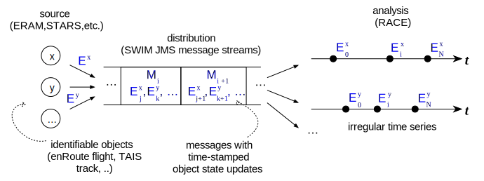
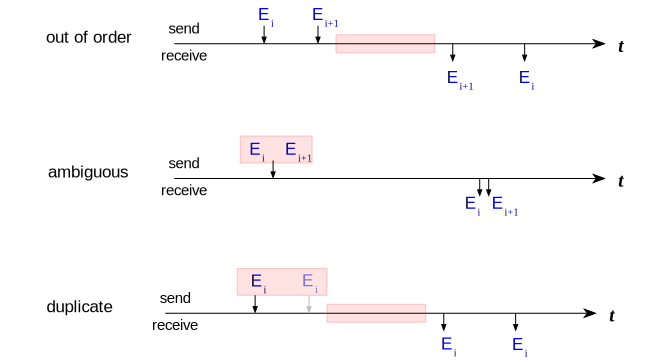
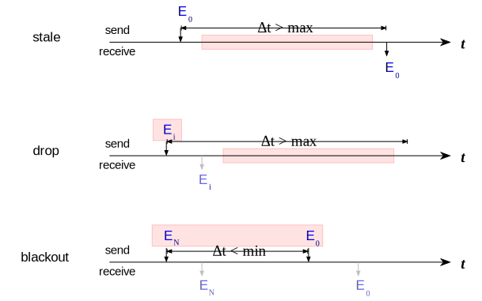

0 / 0
00:00
Time Series Analysis Infrastructure
detect anomalies
Data Model - Track Update Channels
- (multiplexed) channels with messages that update tracks (enRoute flights, ASDE-X tracks, ..)
- transformed into stream of per-track update events that have timestamps
- each stream constitutes time series over track states

Order- and Content Anomalies
- out-of-order: older update received later
- ambiguous: same timestamp, different data
- duplicate: same timestamp, same data

Duration-Based Anomalies
- stale: dead on arrival
- drop: not terminated, not updated
- blackout: terminated, then updated
